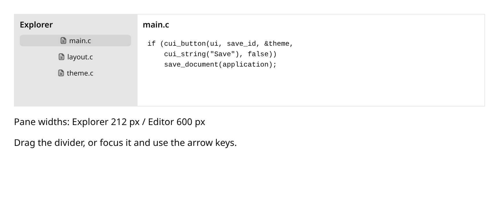
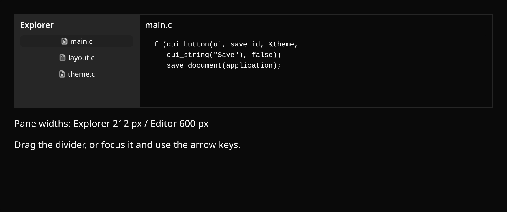

Build a native UI in C.
CUI combines Clay layout, tested interaction primitives, themed components and independent renderer adapters. Embed it in your host, or try the same C implementation live in the browser.


Build your first native appStart buildingTry a composed appPython, Go, Rust, JS & TypeScriptCopy an agent promptAgent docs indexFull docs text
A small CUI frame
#include "cui/cui_components.h"
void settings_frame(cui_context *ui, bool *notifications) {
cui_theme theme = cui_theme_light();
cui_begin_frame(ui, 640, 480, 1.0f / 60);
cui_begin_box(ui, cui_id_from(ui, "settings"), (cui_box){
.width = -1, .height = -1, .padding = 24, .gap = 12,
.background = theme.background
});
cui_label(ui, &theme, cui_string("Settings"));
cui_switch(ui, cui_id_from(ui, "notifications"), &theme,
cui_string("Notifications"), notifications, false);
cui_end_box(ui);
cui_draw_list list = cui_end_frame(ui);
/* Consume list synchronously before the next frame. */
(void)list;
}See the native app starter and build instructions and API ownership before wiring a renderer.
CUI is a development snapshot. The gallery shows implemented behavior and keeps all 78 reference families visible; it does not claim complete component parity.
Documentation
View Markdown sourceComponent gallery
LoadingExplore the component library and interact with CUI compiled to WebAssembly.
Browser story pending
CUI composes frames immediately; application values and explicit models persist between frames. Learn state ownership and callbacks.
State and interaction
- Composition
- Keep between frames
- Handle interactions
Usage
C11 excerpt for an active cui_begin_frame/cui_end_frame. Initialize the context and theme, retain any state and IDs, and supply named callbacks before using it; open the linked public header for types and setup.
Implementation scope
| Reference feature | Evidence |
|---|